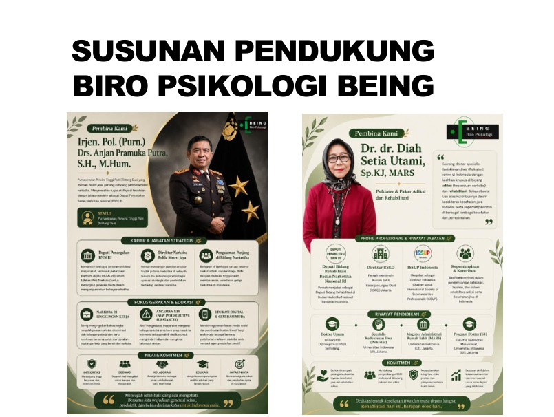
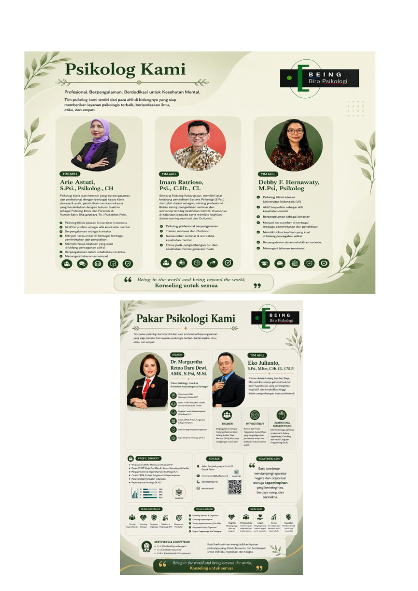
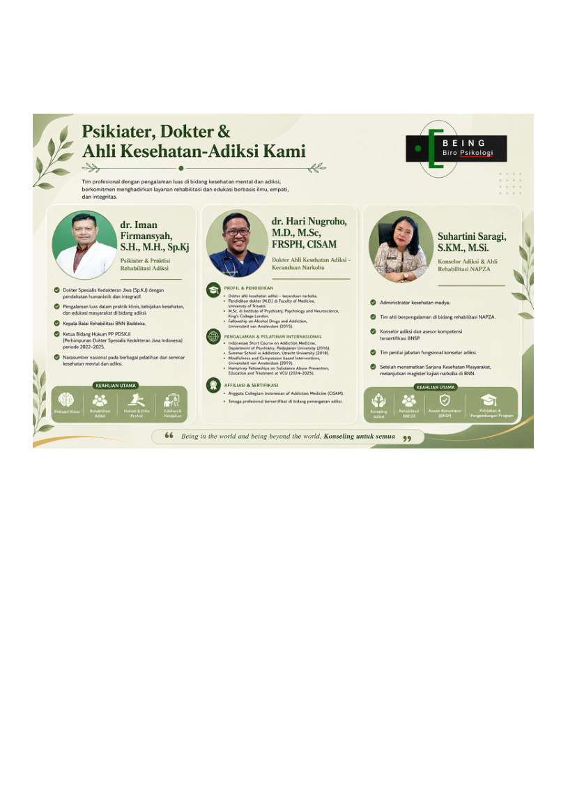
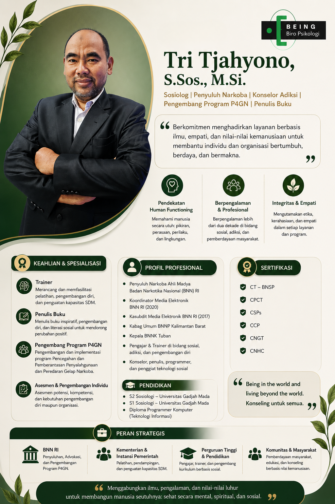

Human Functioning
Optimalisasi kapasitas psikologis agar manusia dapat berfungsi secara utuh.
Ruang layanan psikologi, asesmen, konsultasi, pelatihan, dan pengembangan manusia untuk individu, kelompok, serta organisasi.

BEING didirikan atas keyakinan bahwa setiap manusia unik dan memiliki kemampuan berbeda dalam menerima, mempersepsi, serta merespons perubahan di lingkungannya.
Kematangan psikologis tercermin dari kemampuan memanfaatkan fungsi kognisi, regulasi emosi dan dorongan, keterlibatan sosial, serta kematangan spiritual secara optimal. Karena itu, layanan BEING diarahkan untuk membantu individu dan kelompok meningkatkan kualitas kehidupannya.
Dalam pelaksanaannya, BEING menggunakan tata laksana terstandar serta metode dan alat ukur yang dapat dipertanggungjawabkan secara etis, ilmiah, dan profesional.
Optimalisasi kapasitas psikologis agar manusia dapat berfungsi secara utuh.
Pencegahan, intervensi, dan pemberdayaan potensi yang bebas dari masalah narkoba.
Metode, asesmen, dan layanan berdasarkan etika, ilmu, serta kompetensi profesional.
Layanan diberikan secara individual maupun kelompok, dengan mengutamakan ketepatan, kecepatan, efektivitas, dan efisiensi.
Pemetaan potensi, kapasitas kognitif, emosi, sikap kerja, serta kebutuhan pengembangan.
Pendampingan psikologis secara individual maupun kelompok sesuai kebutuhan klien.
Identifikasi kandidat yang sesuai dengan job description, job specification, dan kompetensi jabatan.
Pengembangan leadership, teamwork, personality, serta keterampilan kerja melalui metode aktif.
Job analysis, job specification, performance analysis, dan penilaian kepuasan pelanggan.
Edukasi, screening, assessment, intervensi, rehabilitasi, dan pemberdayaan potensi.
BEING didukung oleh psikolog, psikiater, dokter, konselor adiksi, praktisi rehabilitasi, profesional human resources, sosiolog, trainer, penulis, dan pengembang program human development.

Pembina, founder, serta pengelola layanan dan pengembangan organisasi.

Tenaga profesional dengan pengalaman layanan psikologi dan pengembangan manusia.

Tim kesehatan mental, adiksi, rehabilitasi, dan edukasi berbasis ilmu.

Sosiolog, Penyuluh Narkoba, Konselor Adiksi, Trainer, Penulis Buku, dan Pengembang Program P4GN.
Lihat profil lengkap →Ikuti jajak pendapat, evaluasi layanan, dan survei kebutuhan yang dikelola langsung melalui sistem BEING.
Jl. Sinabung Raya No. 6B, Kebayoran Baru, Jakarta Selatan 12120